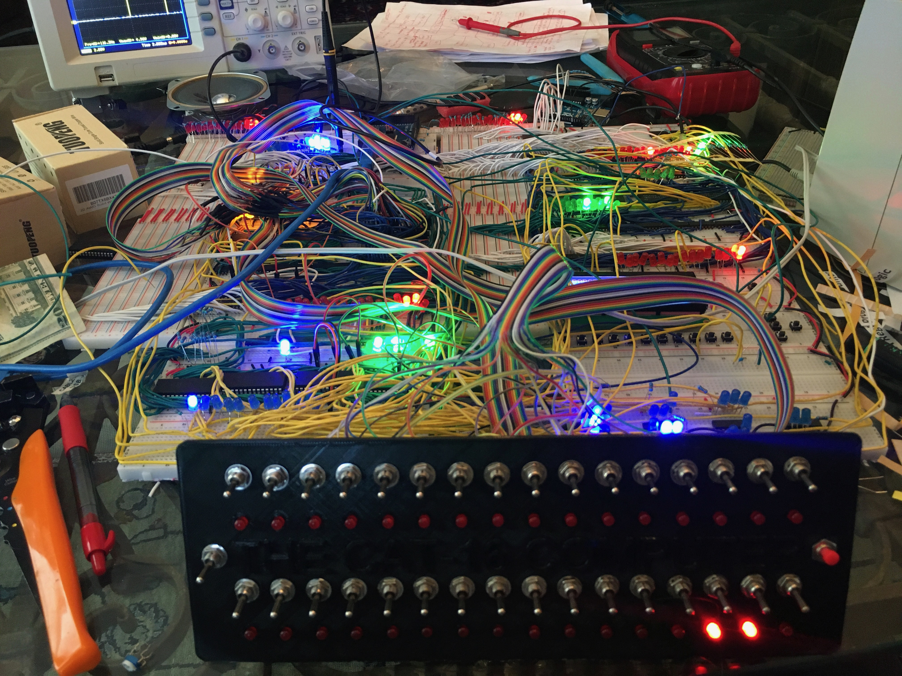
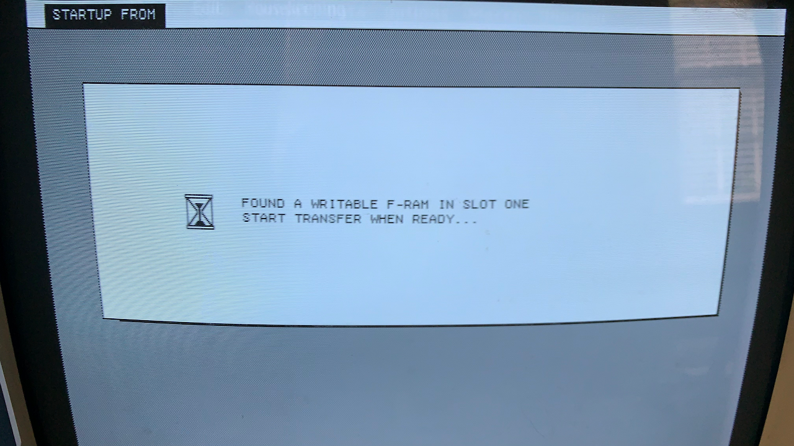
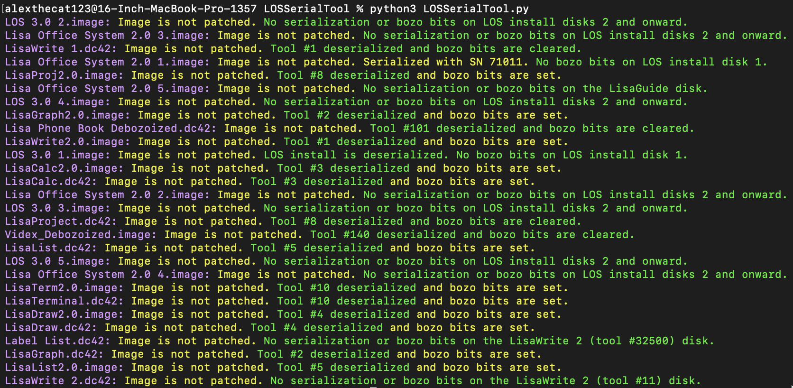

Problem Statement
People need better webcam options that are capable of face-tracking and gimbaling to improve the video conferencing and content recording experience.
Affinity Diagram
This is the affinity diagram for the camera gimbal project. It is broken into 5 sections: Hardware Considerations, Backend Software, User Interface, Safety and Security, and Time Management.
Project Sketches

These three sketches show how the SWVL gimbal's hardware and software will be constructed. One sketch covers the hardware, another covers the main control UI, and the third covers a pop-up menu used for manual control of the gimbal.
Paper Prototype
This is the paper prototype of the SWVL control panel application. Since its only purposes are to allow you to adjust gimbal settings and move the gimbal under manual control, it's rather simple, and this project is more backend and hardware heavy.
ArduinoFile

An Arduino-based device for testing and emulating Apple's ProFile hard drive.
The CAT-16 Computer
A 16-bit processor that I designed and built on about 20 breadboards. I did this in 9th grade, so it's not the most polished design, but it works!
Lisa Expansion Card ROM Programmer
A Motorola 68000 assembly language program that allows you to program Apple Lisa expansion card ROMs in situ using a modern computer.
LOSSerialTool
A program that allows you to modify the serialization attributes of Apple Lisa Office System program diskettes.